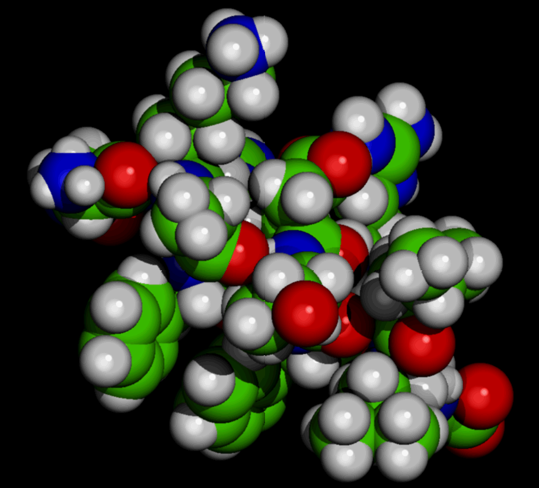

|
Manual
a) The first page shows a simple SN2 reaction involving Iodomethane and Chloride Ion. b) Click on each molecule to display correspoding GAMESS input and output files. c) Use INPUT / OUTPUT radio buttons to toggle between the two files. d) Fill the energy for each molecule in Hartrees. |
 |
Many reactions occur in a single step if the reactants collide with a suffucient energy and specific orientation to form a product. However, many reactions do not occur in a single step but follows multi-steps where it goes through many intermediate levels in a half-way and finally leads to product. These intermediate levels are known as transition states ....
Read More>> |